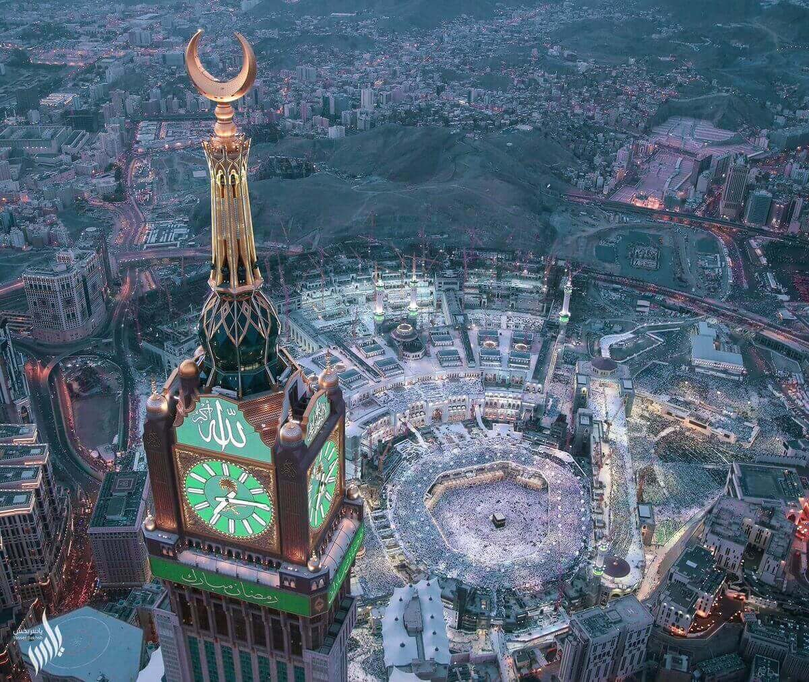
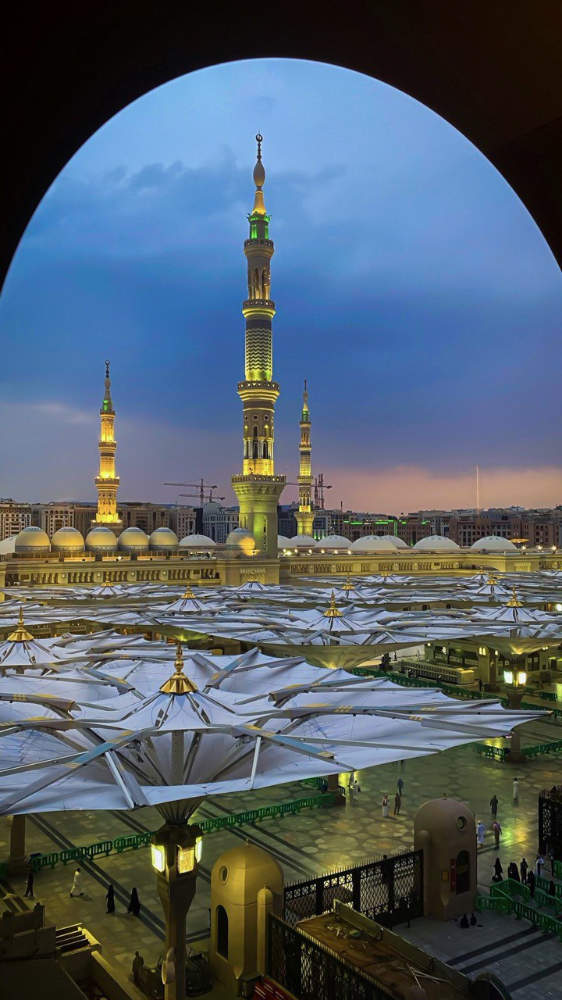
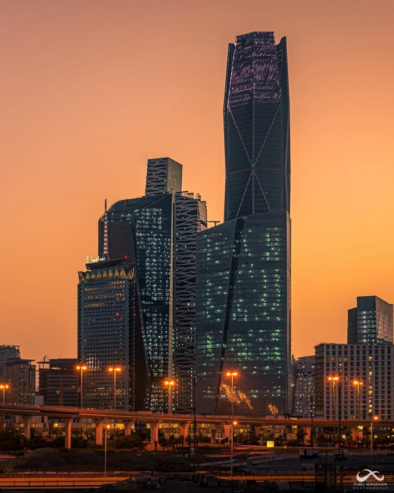
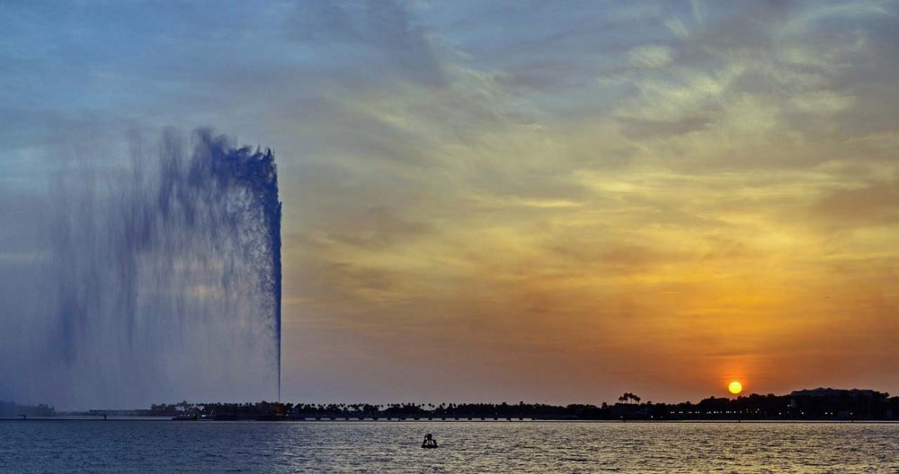
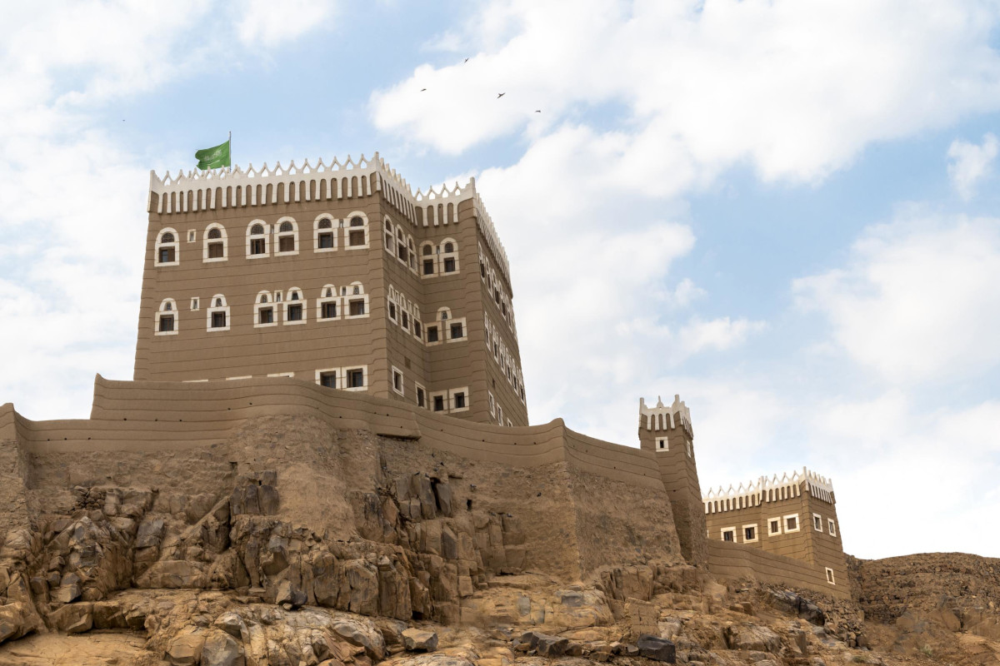

مدن سياحية في المملكة العربية السعودية
مكة المكرمة
المسجد الحرام، أعظم مسجد في الإسلام ويقع في قلب مكة.
المدينة المنورة
المسجد النبوي، ثاني أقدس مسجد في الإسلام بعد المسجد الحرام.
العلا

جبل الفيل، تكوين صخري طبيعي شهير في محافظة العلا.
الرياض
مركز كافد، من أحدث المشاريع الحضارية والمعمارية في العاصمة الرياض.
جدة
جدة، مدينة ساحلية على البحر الأحمر، تتميز بمعالم مثل كورنيش جدة ونافورة الملك فهد، وتجمع بين التراث والحداثة.
نجران
نجران، مدينة تاريخية جنوب المملكة، تشتهر بموقعها الجميل ومعالم مثل قصر الإمارة وقرية الرفاع.